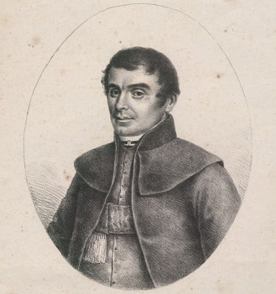

Про проект
Ми знайшли багато цікавого в нашому родовому дереві, тому хочемо про це розповісти.
Визначні представники роду

Тимофій Черкавський, віце-ректор Львівської семінарії. Зображення з 1835 року

Євсевій Черкавський, ректор Львівського університету, син Тимофія Черкавського
Історія, яку ми відкрили
Початки
Місця проживання
Карта поселень
Статті
Що вже досліджено